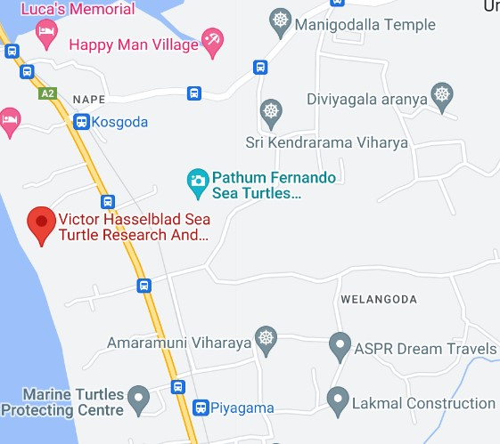

There are 18 turtle hatcheries located along the southern coast of the country. The Kosgoda turtle hatchery was started in 1981 and is one of the first turtle conservation programs in Sri Lanka. The five types of turtles that may be spotted on the country's beaches were all born at the famous Kodgoda turtle hatchery. The Kosgoda projects aim to protect the turtle population along the shore in far more ways than only acting as a nursery. They run a variety of activities and volunteer programs so that residents and tourists from other nations can take part in and learn about the processes of turtle hatching.
The Kosgoda Turtle Hatchery in Sri Lanka provides protection to several species of sea turtles. These include the Green Turtle, Hawksbill Turtle, Olive Ridley Turtle, and Loggerhead Turtle. The hatchery collects their eggs from vulnerable nesting sites along the coast and ensures their safe incubation. Once the hatchlings emerge, they are released into the ocean, increasing their chances of survival. By safeguarding these turtle species and educating the public about their importance, the Kosgoda Turtle Hatchery plays a crucial role in the conservation and preservation of sea turtles in Sri Lanka.
|

|
|
|---|